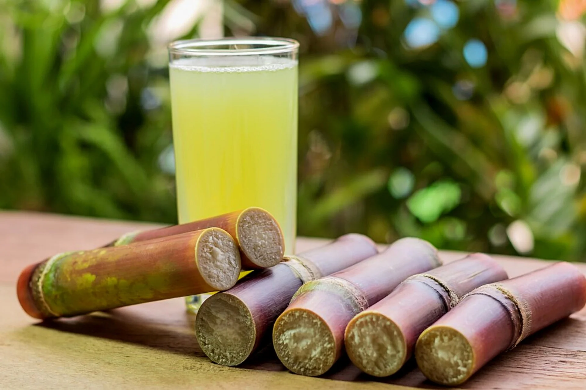

SUGARCANE
Introduction

Sugarcane, a perennial tropical grass, exhibits a unique growth pattern characterized by lateral shoots emerging at its base, leading to the development of multiple stems. These stems typically attain a height of 3 to 4 meters (approximately 10 to 13 feet) and possess a diameter of about 5 centimeters (approximately 2 inches). As these stems mature, they evolve into cane stalks, constituting a substantial portion of the entire plant, accounting for roughly 75% of its composition.
A fully mature cane stalk generally comprises a composition of around 11–16% fiber, 12–16% soluble sugars, 2–3% nonsugar carbohydrates, and 63–73% water content. The successful cultivation of sugarcane hinges on a delicate interplay of several factors, including climatic conditions, soil properties, irrigation methods, fertilization practices, pest and disease management, the selection of specific varieties, and the timing of the harvest.
In terms of yield, the average production of cane stalk stands at 60–70 tonnes per hectare (equivalent to 24–28 long tons per acre or 27–31 short tons per acre) annually. However, this yield figure is not fixed and can vary significantly, ranging from 30 to 180 tonnes per hectare. This variance is contingent upon the level of knowledge applied and the approach to crop management embraced in the cultivation of sugarcane. Ultimately, the successful cultivation of this valuable crop demands a thoughtful integration of various factors to optimize its growth and productivity.
Nutrition
Sugarcane is primarily composed of water and carbohydrates, with a relatively low content of other nutrients. Here's an overview of the nutrition of sugarcane:
- Carbohydrates: Sugarcane is rich in carbohydrates, primarily in the form of sucrose. Sucrose is a disaccharide composed of glucose and fructose and is the main sugar present in sugarcane juice.
- Water: Sugarcane has a high water content, typically around 70-75%. This makes it a hydrating and refreshing crop, especially in tropical and subtropical climates where it is commonly grown.
- Calories: Due to its carbohydrate content, sugarcane is relatively high in calories compared to many other fruits and vegetables. However, it is often consumed in moderation or processed into products like sugar or ethanol.
- Fiber: While sugarcane itself is not a significant source of dietary fiber, some residual fiber may be present in sugarcane juice or processed sugarcane products.
- Vitamins and Minerals: Sugarcane contains small amounts of vitamins and minerals, including vitamin C, vitamin B6, potassium, magnesium, calcium, and iron. However, these nutrients are present in relatively low concentrations compared to other fruits and vegetables.
- Phytonutrients: Sugarcane contains phytonutrients, such as polyphenols and antioxidants, which contribute to its potential health benefits. These compounds may have antioxidant and anti-inflammatory properties.
- Sugar Content: The main nutritional component of sugarcane is sugar, primarily sucrose. This sugar content is what makes sugarcane valuable for sugar production, as well as for producing ethanol for biofuel.
- Hydration: Sugarcane juice is often consumed as a refreshing beverage in tropical regions, providing hydration and a natural source of sweetness.
While sugarcane itself is not a nutrient-dense food like fruits and vegetables, it plays a significant role in the global sugar industry and is used in various food and beverage products. Moderation is key when consuming sugarcane or sugarcane-derived products due to their sugar and calorie content.
How to grow Sugarcane
 Growing sugarcane can be a rewarding endeavor, especially in regions with warm climates and adequate rainfall or irrigation. Here's a step-by-step guide on how to grow sugarcane:
Growing sugarcane can be a rewarding endeavor, especially in regions with warm climates and adequate rainfall or irrigation. Here's a step-by-step guide on how to grow sugarcane:
- Choose Sugarcane Varieties: Select sugarcane varieties suited to your climate and soil conditions. Common varieties include hybrids developed for high sugar content and disease resistance.
- Prepare the Planting Site:
- Climate: Sugarcane thrives in tropical and subtropical climates with warm temperatures year-round. It requires a frost-free period for optimal growth.
- Soil: Choose well-drained soil rich in organic matter. Sugarcane prefers sandy loam or clay loam soil with a pH between 5.5 and 8.0.
- Sunlight: Plant sugarcane in a location that receives full sun for most of the day.
- Obtain Sugarcane Setts:
- Sugarcane is typically propagated from setts, which are stem cuttings with nodes.
- Obtain healthy sugarcane setts from a reputable source or from existing sugarcane plants.
- Planting Sugarcane Setts:
- Cut sugarcane setts into sections, each containing 2-3 nodes.
- Plant the setts in furrows or trenches, spacing them about 2-3 feet apart.
- Place the setts horizontally in the furrows, covering them with soil and ensuring that the nodes are facing upwards.
- Watering and Irrigation:
- Water newly planted sugarcane thoroughly to promote root establishment.
- Provide regular irrigation, especially during dry periods, to maintain soil moisture levels.
- Fertilization:
- Apply fertilizers based on soil test recommendations or general guidelines for sugarcane.
- Use a balanced fertilizer with nitrogen (N), phosphorus (P), and potassium (K) to support growth and sugar production.
- Weed Control:
- Keep the sugarcane planting area free of weeds that compete for nutrients and water.
- Use manual weeding or herbicides as needed, taking care not to damage the sugarcane plants.
- Pest and Disease Management:
- Monitor sugarcane plants for pests such as aphids, borers, and grasshoppers. Use integrated pest management strategies to control pest populations.
- Watch for diseases like smut, rust, and leaf scald, and take preventive measures such as crop rotation and disease-resistant varieties.
- Staking and Support:
- As sugarcane grows, provide support by staking taller varieties to prevent lodging and ensure upright growth.
- Harvesting Sugarcane:
- Sugarcane is typically ready for harvest 9-24 months after planting, depending on the variety and growing conditions.
- Harvest sugarcane by cutting the mature stalks at ground level using a machete or harvesting knife.
- Process the harvested sugarcane for sugar extraction, juice production, or other uses.
By following these steps and providing proper care, you can successfully grow sugarcane and enjoy the satisfaction of harvesting this versatile and valuable crop. Adjustments may be needed based on your specific climate, soil type, and local agricultural practices.
Firtilizing
Fertilizing sugarcane is crucial for ensuring optimal growth, sugar content, and yield. Here are the key steps and considerations for fertilizing sugarcane effectively:
- Soil Testing: Conduct a comprehensive soil test before planting sugarcane to assess nutrient levels, pH, and soil fertility. This information will guide you in developing a targeted fertilization plan.
- Nutrient Requirements: Sugarcane has specific nutrient requirements, with nitrogen (N), phosphorus (P), potassium (K), and micronutrients playing critical roles in its growth and development.
- Nitrogen (N): Nitrogen is vital for vegetative growth, leaf development, and sugar accumulation in sugarcane. Apply nitrogen fertilizers in split doses throughout the growing season to meet the crop's demand at different growth stages. Consider using urea or ammonium sulfate as nitrogen sources.
- Phosphorus (P): Phosphorus supports root development, early growth, and overall plant vigor. Apply phosphorus fertilizers, such as triple superphosphate (TSP) or diammonium phosphate (DAP), before planting or at planting time based on soil test recommendations.
- Potassium (K): Potassium is essential for sugar synthesis, disease resistance, and stress tolerance in sugarcane. Apply potassium fertilizers, such as potassium chloride (Muriate of Potash) or potassium sulfate, throughout the growing season to maintain adequate levels for optimal plant health.
- Micronutrients: Monitor and supplement micronutrients like magnesium, calcium, sulfur, iron, zinc, manganese, and boron as needed. Micronutrient deficiencies can negatively impact sugarcane growth, yield, and sugar content.
3. Fertilizer Application Timing:
- Pre-Planting: Incorporate phosphorus and potassium fertilizers into the soil before planting sugarcane to establish a nutrient-rich root zone.
- Split Applications: Divide nitrogen fertilizer applications into multiple doses throughout the growing season. Apply a significant portion of nitrogen at planting or early growth stages, followed by additional doses during active growth and sugar accumulation phases.
- Foliar Fertilization: Consider foliar applications of micronutrients and soluble fertilizers during critical growth stages. Foliar feeding can supplement soil-applied nutrients and address immediate plant nutrient needs.
- Fertilizer Placement: Apply fertilizers evenly and at the appropriate depth to ensure efficient nutrient uptake by sugarcane roots. Incorporate fertilizers into the soil during planting or through side-dressing and banding methods for targeted nutrient delivery.
- Organic Matter and Mulching: Incorporate organic amendments, such as compost or well-aged manure, into the soil to improve soil structure, moisture retention, and nutrient availability. Mulching with organic materials can also conserve soil moisture and reduce weed competition.
- Irrigation Management: Proper irrigation is essential for maximizing nutrient uptake and sugar accumulation in sugarcane. Maintain consistent soil moisture levels, especially during critical growth stages, to support optimal plant growth and nutrient utilization.
- Monitor and Adjust: Regularly monitor sugarcane growth, leaf color, and overall plant health to identify nutrient deficiencies or excesses. Adjust fertilization practices based on plant response, soil test results, and agronomic recommendations to optimize nutrient management and crop performance.
By implementing a well-planned fertilization program tailored to your soil conditions, climate, and sugarcane variety, you can promote healthy growth, high sugar content, and sustainable yields in your sugarcane plantation. Regular soil testing, nutrient monitoring, and timely fertilizer applications are key to success in fertilizing sugarcane effectively.